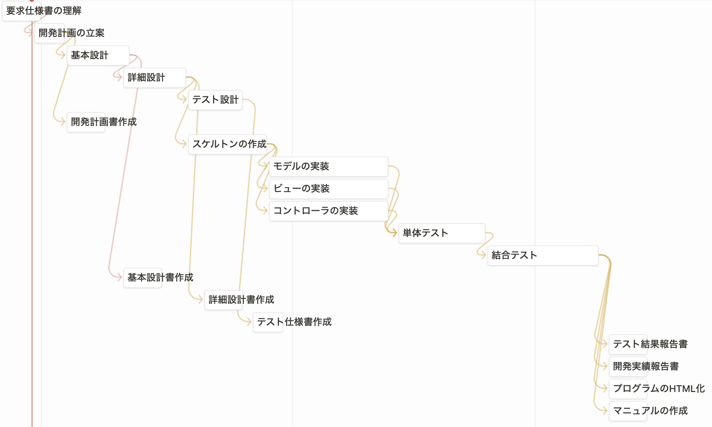

ソフトウェア工学II「樹状整列」開発実績報告書
樹状整列プログラムを作るにあたって以下のようなプランで、制作を進めた。

このプロジェクトは2023年5月30日に開始し、プロジェクトが2023年7月30日に終了するように開発を進めた。
このプロジェクトを開発するにあたって、さまざまな課題に直面した。
まず、要求を満たすようなプログラムを作成するためにソフトウェアの設計を考えるのに苦労した。どのようなプログラムを作成すればいいのかは青木先生が書いてくださった樹状整列プログラムのヒントを頼りにクラス分けなどを熟考し適切なプログラムとなるように設計した。
プログラムの実装には特に難航を示し、具体的にどのような変数やメソッドが必要なのかをなかなか定めることができなかった。チームでどれだけ案を出しても、仕様を満たすようなものは出てこなかったため、青木先生から開発のヒントにつながるプログラムをいただくことにした。いただいたプログラムを熟読することで、問題解決への糸口が見つかりプログラムを最後まで完成することができた。
最後に、プログラムのテストをするにあたって適切なテスト方法がわからず、難航した。単体テストについてはこちらのサイトを参考にすることでJUnitを用いてテストをすることができた。
まず、要求を満たすようなプログラムを作成するための基本設計に大きく時間を使ってしまい、当初の開発プランより遅れてしまった。そのため当初の予定よりプログラムの実装を開始するのが遅くなってしまった。
基本設計が少し甘かったためかプログラムを実装するにあたって適切なメソッド等がわからずかなり時間がかかってしまった。そのためプログラムのテストも当初の予定より大幅に遅れてしまった。しかし、2023年7月28日にすべてのプログラムのテストを終えることができ、終了予定日前にプログラムを完成させることができた。
実際に大規模なプロジェクトを行うことで今まで気づかなかった重要なことを多く気づくことができた。特に設計書を書くことの大変さ重要さをよく知ることができた。結果としてプログラムの設計書を書くのに時間がかかってしまい予定通りにプログラムを進めることができなかった。
プロジェクトを進める前、プログラムの実装に最も時間を費やすことになると結論づけていたため設計書作成にかかる時間を甘くみていた。その結果、想像していたよりも要求を満たすようなプログラムを設計することは難しいということがわかった。また、設計書に漏れがあるとプログラムを実装する際に作成しなければならないものがわからなくなり、時間がかかってしまった。
これらから設計書を作成する重要さを学ぶことができた。
また、このプロジェクトを通して、一人でプログラムを書き上げることと、チームで協力してプロジェクトを進める際の違いについて明確に理解することができた。チームで作業を進めるため作業を分担する必要がある。しかし、分担した作業はそれぞれ独立ではなく、最終的にはプロジェクトの一部となっていることをよく理解する必要があることがわかった。一人の作業が遅れると次の作業ができなくなるため、報告・連絡・相談は徹底することが必要であることがわかった。
プログラムを作成する際は、他人が見てもわかるように書かなければならないことを理解した。それぞれのプログラムは関連しているため、チームのメンバーが作ったプログラムは必ず一度は参照することがある。その時に、どのような役割を果たしているかを誤解してしまった時に、全体としてプログラムは動かなくなってしまう。そうした事態を防ぐためには、コメント文を細かく書いたり、変更したポイントをきちんと伝えたりすることが重要であると理解した。
Copyright 2023 Project Forest, Updated: 2023/7/29 (Created: 2023/5/30)